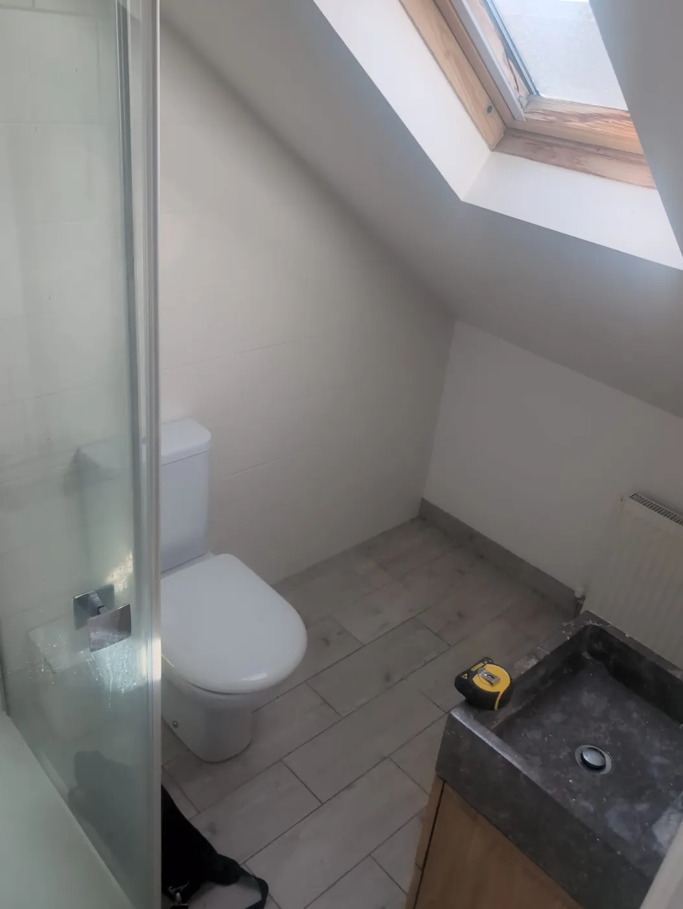
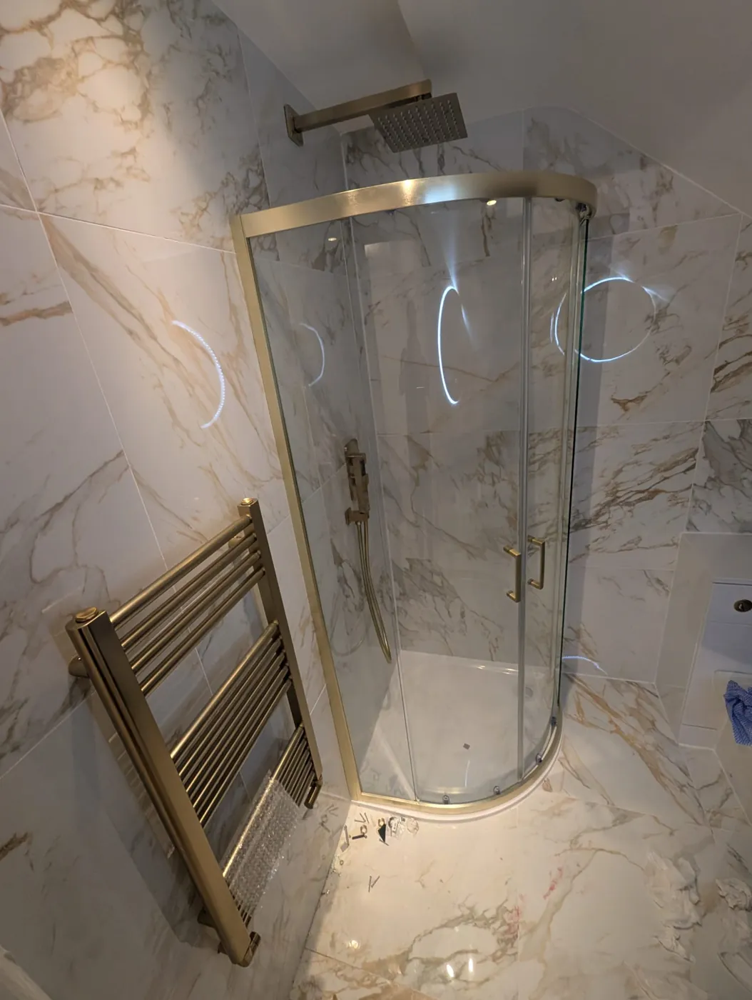
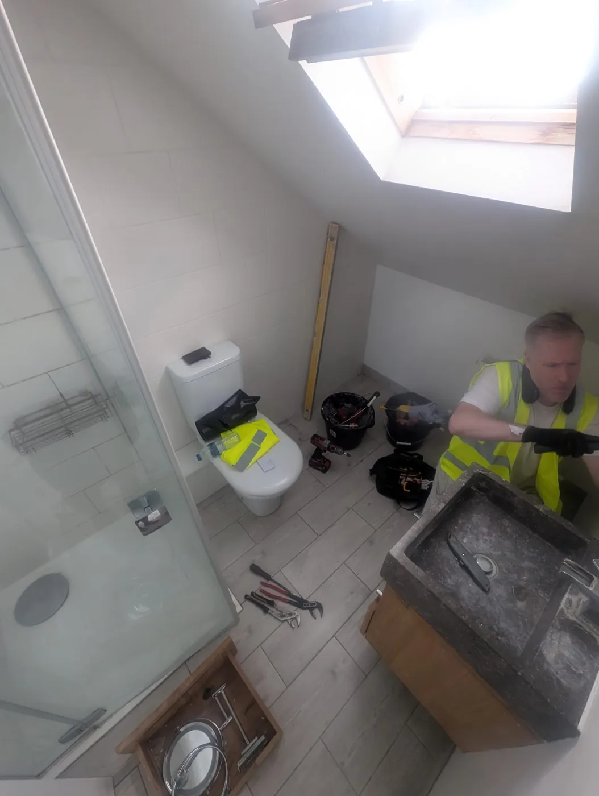
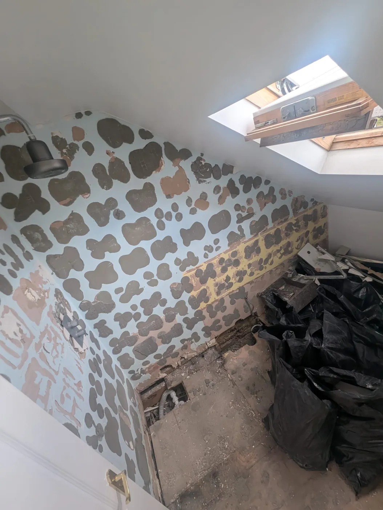
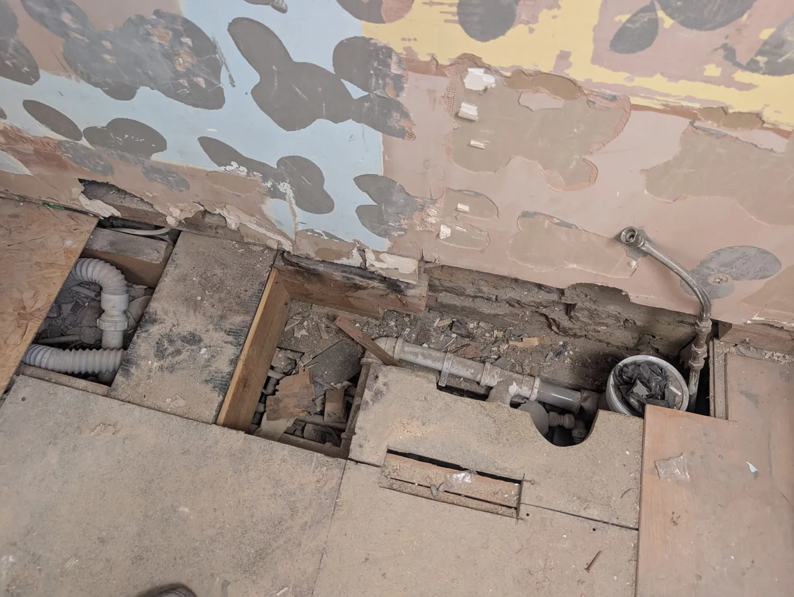
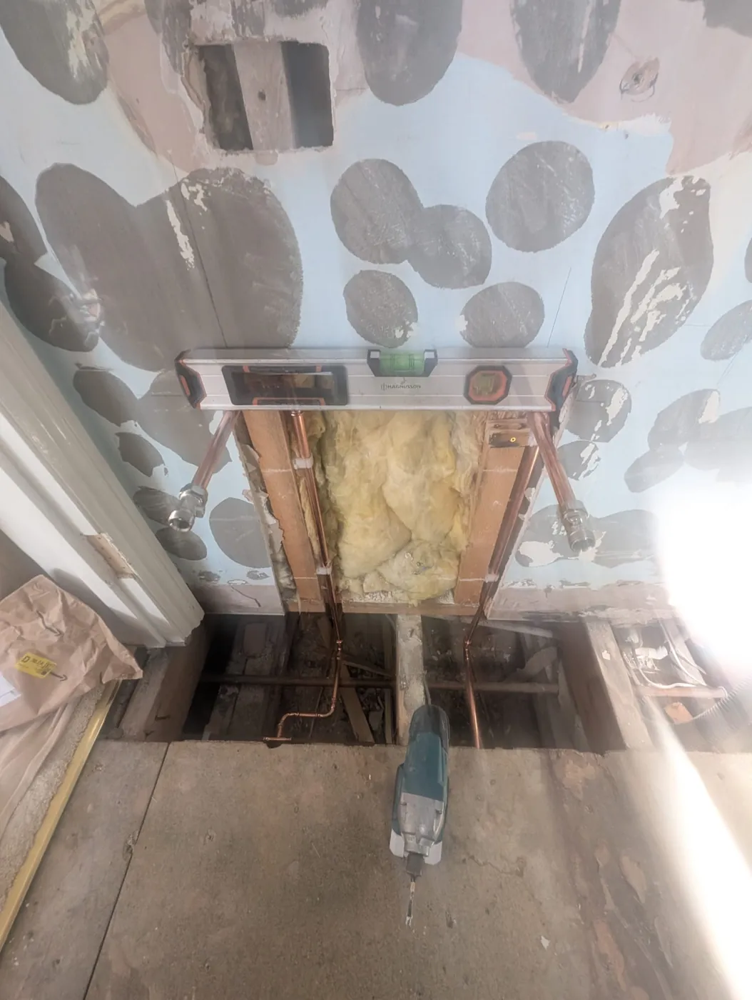
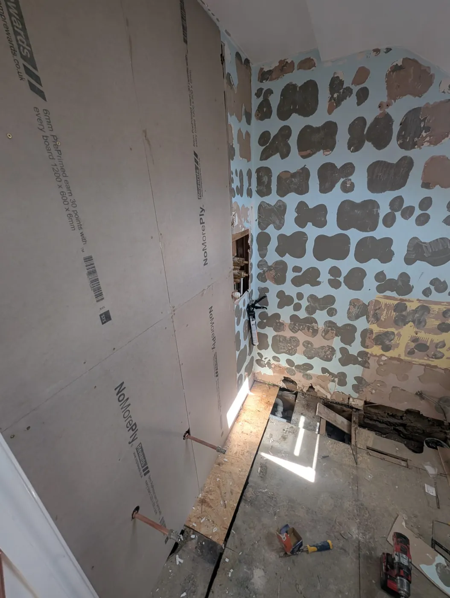
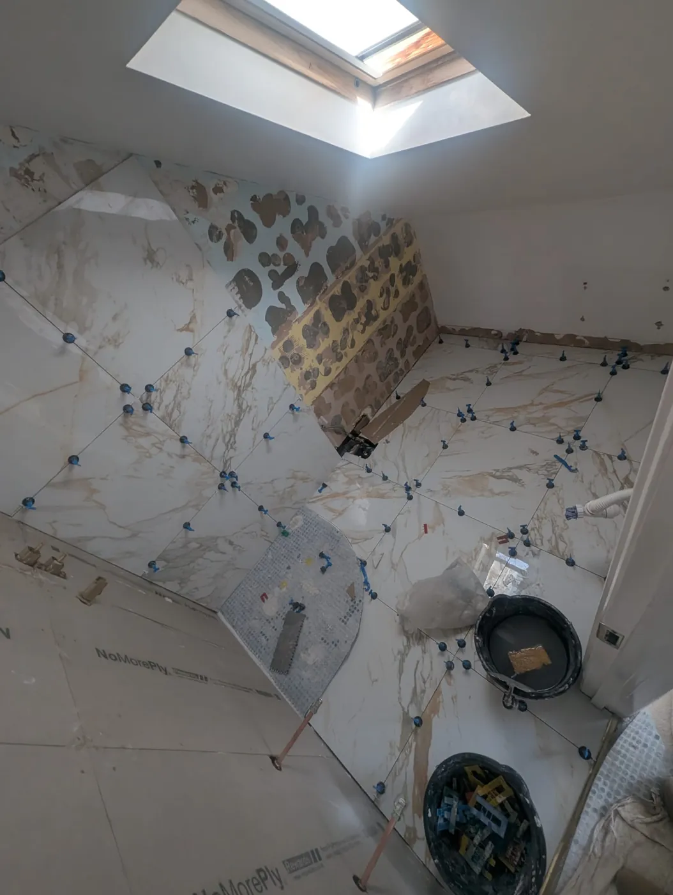
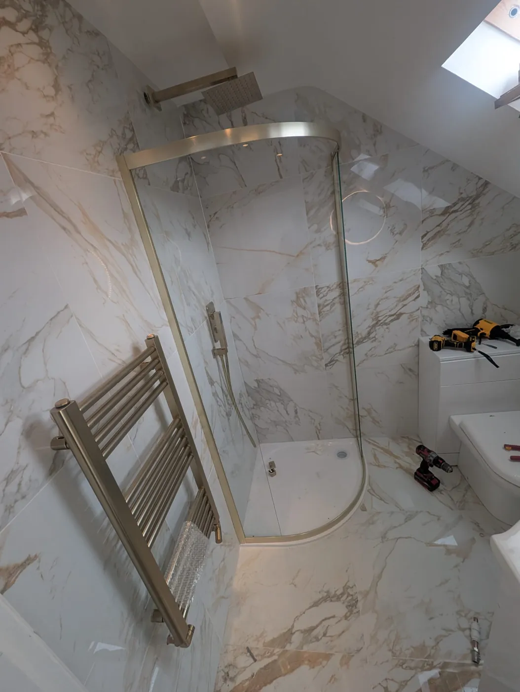
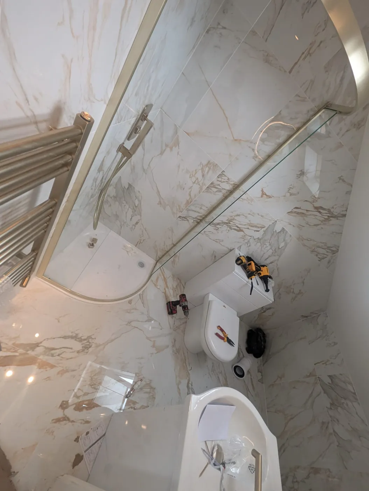

Home / Projects / Rosaline Road
Rosaline Road loft en-suite, Fulham
A full rebuild of the loft en-suite in a newly purchased house, close to our Munster Road shop. The new owners wanted the room redone properly, with a brushed-brass finish throughout.

Before
AfterWhat the client wanted
The house had just been bought and the existing loft en-suite was tired. The client wanted a complete rebuild rather than a cosmetic refresh, with brushed-brass fittings against light, gold-veined tiles, and better use of the space under the window and eaves.
A serious problem under the floor
After the rip-out we found that a previous installation had cut out a major floor joist. In practice, nothing was properly holding up the toilet. The joist was replaced before any new work went back in. This is exactly the kind of problem that stays hidden until a room is stripped, and why we survey and quote for what is behind the finish, not just the finish itself.




How it was rebuilt
- Full strip-out of tiles, suite, enclosure and floor finish
- Missing floor joist replaced to support the new WC
- Radiator moved from under the window to a brushed-brass towel radiator behind the door, freeing the space under the window and eaves
- New hot and cold pipework
- Walls lined with NoMorePly cement boards; floor tiles laid over a decoupling membrane
- Large-format gold-veined porcelain from floor to ceiling
- Brushed-brass quadrant enclosure, overhead rain shower and handset




Finished photos were taken at handover, before the client moved in.
Planning something similar?
Visit us at 287 Munster Road, Fulham, London SW6 6BW, call 0207 386 0000, or WhatsApp a few photos of the room. For planned bathroom and en-suite projects we can arrange a free home survey.